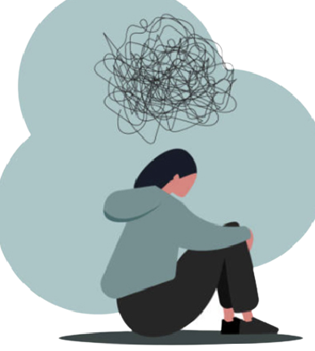

Examen
Examen de Segundo periodo
INTRODUCCION
La salud mental incluye el bienestar emocional, psicológico y social. Afecta la forma en que pensamos, sentimos y actuamos cuando enfrentamos la vida. También ayuda a determinar cómo manejamos el estrés, nos relacionamos con los demás y tomamos decisiones
El término de trastornos mentales o emocionales incluye una gran gama de condiciones que afectan sustancialmente la capacidad de las personas para manejar las demandas de la vida diaria. Esta condición puede causar dificultades de pensamientos, sentimientos, conducta funcional y relaciones personales.
En el presente trabajo se desarrollará temas relacionado con la salud mental tales como: los trastornos emocionales, los problemas alimenticios y el bullying.
Objetivos
General
En esta clase aprendimos a como colocar imagenes en un texto y tambien aprendimos a como colocar un enlace en una imagen, tambien realizamos una practica donde hablamos de un tema y colocamos imagenes con enlaces.
Dar a conocer los conceptos de trastornos mentales, los problemas alimenticios y el bullying.
Objetivo Específico:
1. Profundizar acerca de los temas seleccionados
2. Invitar a la comunidad educativa a tomar más conciencia en la educación mental de los estudiantes
Salud

La importancia de la salud mental radica en que ante su ausencia, la persona es incapaz de desenvolverse adecuadamente en la sociedad, incluyendo el campo laboral. También su ausencia suele comprometer la salud física de la persona, generando patologías y enfermedades que pueden llegar a ser crónicas.
Poseer una buena salud mental implica no solo estar libre de diversos trastornos psicológicos, sino también poseer un bienestar emocional, psicológico y social. No debes olvidar que tu mente determina cómo razonas y sientes, y por ello como actúas al enfrentar los retos que impone la vida.
Por ello, hemos preparado para ti el presente artículo, donde te indicamos la importancia de la salud mental.
Cualquier acción que realizas se inicia en tu mente, y lo que comienza mal es poco probable que culmine bien. De allí la importancia que tiene para ti contar con una salud mental adecuada, que te permita una correcta relación con el entorno.
La salud mental es un estado de bienestar del cual eres consciente y te hace sentir a gusto con tus propias capacidades mentales y físicas. Eres capaz de trabajar de forma productiva, así como de hacer contribuciones positivas a la sociedad. Y también puedes enfrentar los retos y dificultades que el desarrollo cotidiano de la vida te impone.